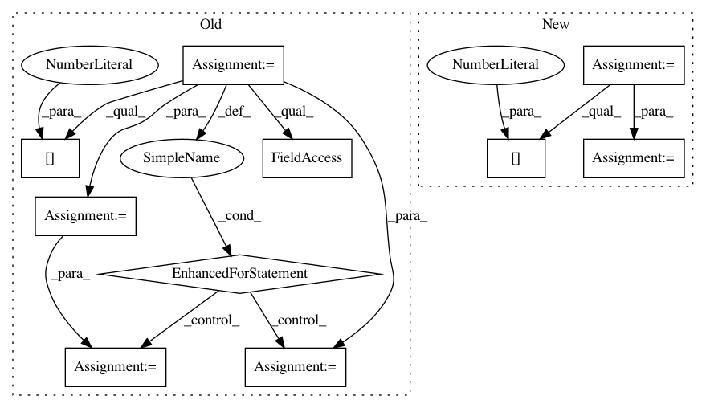

348122d499073a7a58b21d6e5544bc4b47a9ee94,gpytorch/lazy/kronecker_product_added_diag_lazy_tensor.py,KroneckerProductAddedDiagLazyTensor,inv_quad,#KroneckerProductAddedDiagLazyTensor#Any#Any#,115
Before Change
def inv_quad(self, tensor, reduce_inv_quad=True):
// TODO: check stability of numerics here
svd_list = self._kron_svd()
noise = self._diag_tensor[0, 0]
v_matrix = _DiagKroneckerProdLazyTensor(DiagLazyTensor(svd_list[0].S), DiagLazyTensor(svd_list[1].S))
q_matrix = KroneckerProductLazyTensor(lazify(svd_list[0].U), lazify(svd_list[1].U))
for sub_ind in range(2, len(svd_list)):
v_matrix = KroneckerProductLazyTensor(v_matrix, DiagLazyTensor(svd_list[sub_ind].S))
q_matrix = KroneckerProductLazyTensor(q_matrix, DiagLazyTensor(svd_list[sub_ind].S))
// TODO: this could be a memory hog.
inv_mat = DiagLazyTensor(v_matrix.diag() + noise)
res = q_matrix.t().matmul(tensor)
res = inv_mat.inverse().matmul(res)
After Change
def inv_quad(self, tensor, reduce_inv_quad=True):
// TODO: check stability of numerics here
q_matrix = KroneckerProductLazyTensor(*[lazify(eig_decomp[1]) for eig_decomp in self._eig_cache])
inv_mat = DiagLazyTensor(1.0 / (self._kron_eigenvalues.diag() + self._diag_tensor.diag()))
res = q_matrix.t().matmul(tensor)
res = inv_mat.inverse().matmul(res)
In pattern: SUPERPATTERN
Frequency: 3
Non-data size: 10
Instances
Project Name: cornellius-gp/gpytorch
Commit Name: 348122d499073a7a58b21d6e5544bc4b47a9ee94
Time: 2020-06-26
Author: wjm363@nyu.edu
File Name: gpytorch/lazy/kronecker_product_added_diag_lazy_tensor.py
Class Name: KroneckerProductAddedDiagLazyTensor
Method Name: inv_quad
Project Name: markovmodel/PyEMMA
Commit Name: e1adf9416201a9debe4036f1f1ceb83caf6f962a
Time: 2018-02-04
Author: fabian.paul@mpikg.mpg.de
File Name: pyemma/coordinates/tests/test_vamp.py
Class Name: TestVAMPSelfConsitency
Method Name: test
Project Name: scikit-learn-contrib/DESlib
Commit Name: bba1901f835525551dde9ec1537d041abc88d293
Time: 2021-04-08
Author: rafaelmenelau@gmail.com
File Name: deslib/static/oracle.py
Class Name: Oracle
Method Name: predict